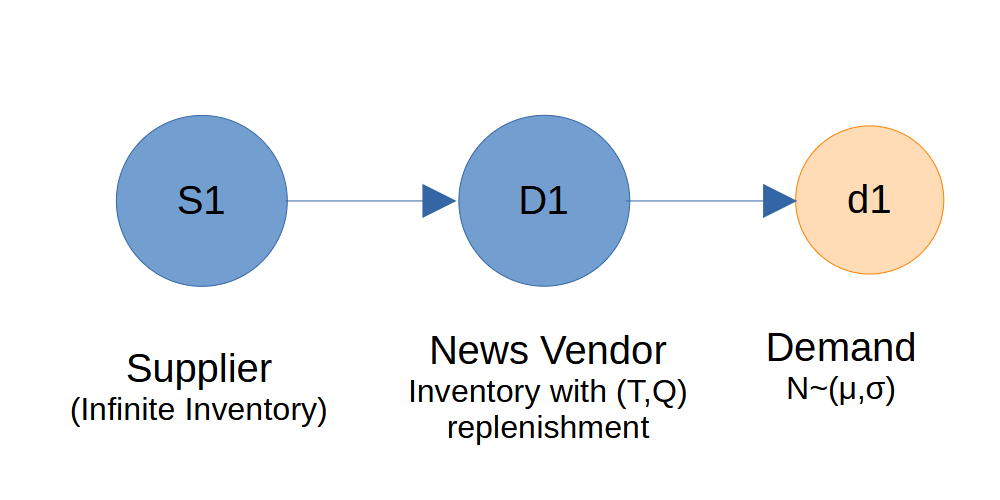

News Vendor Problem
This example illustrates how to model and simulate the classic newsvendor problem. In this problem, a decision-maker must determine the optimal order quantity for a perishable product with uncertain demand, aiming to maximize expected profit by balancing the risks of overstocking and understocking.
Problem Definition
The newsvendor orders Q units every day. Each unit costs c, and the selling price is p. The newsvendor faces normally distributed demand with mean μ and standard deviation σ. If, on a certain day, the actual demand is k, then the net profit after selling k units is calculated as:
Profit = Revenue − Order Cost = k × p − Q × c
However, if there are any units left unsold at the end of the day, they are considered wastage since they cannot be sold the next day. The newsvendor can sell these unsold units back to the supplier at a lower price, called the salvage value s. If the actual demand that day is less than the order size Q, then the net profit is thus calulated as:
Profit = Revenue + Salvage − Order Cost = k × p + (Q − k) × s − Q × c
When the actual demand k exceeds the newsvendor's order quantity Q, the profit is calculated as:
Profit = Q × p − Q × c (In this case, all available units are sold, and the profit is based on the total revenue from selling Q units minus the total ordering cost.)
So, the newsvendor problem is defined by following parameters.
- Ordering cost (c): Cost per unit ordered.
- Selling price (p): Price per unit sold.
- Salvage value (s): Value per unsold unit at the end of the period.
- Mean demand (μ): Average demand during the period.
- Standard deviation of demand (σ): Demand variability.
- Number of samples (n): Number of demand samples for simulation.
- Order quantity (Q): Quantity ordered for the period.
The objective is to find the order quantity Q* that maximizes expected profit.
Analytical Solution
The optimal order quantity is given by:
Q* = μ + σ · Φ−1 (Cu / (Cu + Co))
where:
- Cu = p - c: Underage cost (profit lost per unit of unmet demand)
- Co = c - s: Overage cost (cost per unsold unit)
- Φ-1: Inverse standard normal
- Cu/(Cu + Co): Critical ratio (proportion of demand to satisfy)
Example Parameters
Given:
c = 2
p = 5
s = 1
μ = 100
σ = 15
n = 1000
Q = 100 (example order quantity)
Plugging in the values:
Cu = 5 - 2 = 3
Co = 2 - 1 = 1
Critical ratio = 3/(3 + 1) = 0.75
Q = 100 + 15 · Φ-1(0.75)
Q ≈ 100 + 15 · 0.6745 = 110.12
So, the optimal order quantity is approximately 110 units.
Modeling and Simulating the Newsvendor Problem
It is a simple three-node supply chain with one supplier, a newsvendor (retailer), and normally distributed demand at the newsvendor.

Simulation Setup:
- An infinite_supplier is used to ensure unlimited supply to the newsvendor.
- The focus of the simulation is on the newsvendor node
newsvendor1, which:- Maintains perishable inventory with a shelf life of 1 day. (Shelf life is set to value 1.00001 to avoid expiration before daily consumption.)
- Uses a periodic replenishment policy, ordering every day.
- The link between the supplier and the newsvendor has a lead time of 0, meaning orders are delivered immediately each day.
- Demand is modeled as a normal distribution. The
normal_quantity()function samples order sizes from this distribution. - Setting
consume_availableflag to True for demand allows partial fulfillment. This is necessary because, in the simulation model, the demand appears as a single order of Q units, but in reality, these are individual customers purchasing newspapers. - This setup ensures that the simulation accurately represents the intended demand and fulfillment process for the newsvendor problem.
import simpy
import random
import numpy as np
import matplotlib.pyplot as plt
import SupplyNetPy.Components as scm
cost = 2
sell_price = 5
salvage = 1
mean = 100
std_dev = 15
num_samples = 1000
def normal_quantity():
"""Generates a random order quantity based on a normal distribution."""
sample = random.gauss(mean, std_dev)
while(sample<0):
sample = random.gauss(mean, std_dev)
return sample
cost = 2 # newspaper buy price
sell_price = 5 # newspaper sell price
salvage = 1 # newspaper salvage price
order_quantity = 100 # initial order quantity
cost_arr = [] # to store cost for each order quantity
profit_arr = [] # to store profit for each order quantity
for order_quantity in range(10, 200, 10):
env = simpy.Environment()
# create an infinite supplier
supplier1 = scm.Supplier(env=env, ID="S1", name="Supplier1", node_type="infinite_supplier")
#create the distributor
newsvendor1 = scm.InventoryNode(env=env, ID="D1", name="News Vendor", node_type="distributor",
capacity=float('inf'), initial_level=order_quantity,
inventory_holding_cost=0.1, inventory_type="perishable",
shelf_life=1.00001, replenishment_policy=scm.PeriodicReplenishment,
policy_param={"T": 1, "Q": order_quantity},
product_sell_price=sell_price, product_buy_price=cost)
link1 = scm.Link(env=env,ID="l1", source=supplier1, sink=newsvendor1, cost=10, lead_time=lambda: 0)
demand1 = scm.Demand(env=env,ID="d1", name="demand_d1",
order_arrival_model=lambda: 1, consume_available=True,
order_quantity_model=normal_quantity, demand_node=newsvendor1)
scm.global_logger.disable_logging()
env.run(until=num_samples)
# Calculate the cost and profit
# total demand fulfilled by newsvendor is available in variable demand_fulfilled
# list element 0 is number of orders, element 1 is total quantity
daily_sales = newsvendor1.stats.demand_fulfilled[1]
wasted_inventory = newsvendor1.inventory.waste
everyday_profit = (daily_sales*sell_price + wasted_inventory*salvage - order_quantity*num_samples*cost)/num_samples
profit_arr.append([order_quantity,everyday_profit])
profit_arr = np.array(profit_arr) # convert to numpy array for easier manipulation
Q = np.argmax(profit_arr[:,1]) # index of maximum profit
plt.plot(profit_arr[:,0], profit_arr[:,1], marker='.', linestyle='-', color='b')
plt.plot(profit_arr[Q,0], profit_arr[Q,1], marker='o', linestyle='-', color='r', label=f'Q={profit_arr[Q,0]}')
plt.xlabel('Order Quantity')
plt.ylabel('Profit')
plt.title('Profit vs Order Quantity')
plt.legend()
plt.grid()
plt.show()
The following plot shows the relationship between profit and order quantity (Q). The curve clearly indicates that the maximum profit is achieved when Q is approximately 110, confirming the analytical solution for the optimal order quantity.
Takeway
This example demonstrated how to solve the newsvendor problem using simulation-based approaches using SupplyNetPy library. By simulating different order quantities and evaluating the resulting profits, we can visualize and confirm the optimal order quantity that maximizes expected profit. This approach can be extended to more complex inventory scenarios and demand distributions, providing valuable insights for inventory management decisions.